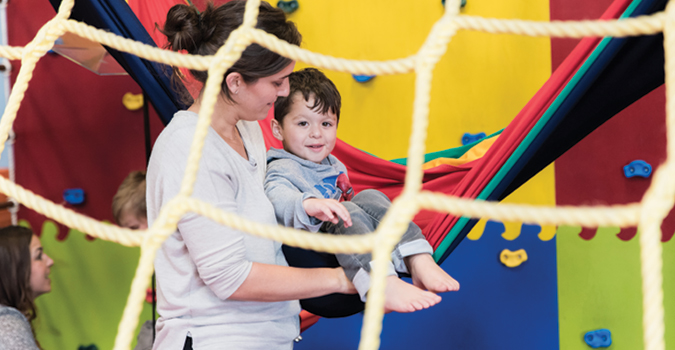
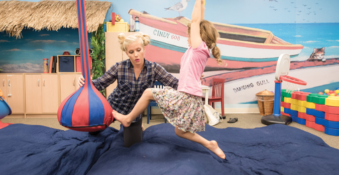

.
.
310-344-2276
At OT 4 Kids, our goal is to create a brighter future for your child by providing them with a fun and nurturing environment. By embracing your child’s individual gifts, we will provide an array of opportunities to develop a strong underlying foundation to maximize their skills and light up the world with their new found growth and self-confidence.
Through capitalization of your child’s strengths & motivation, and identifying challenges & learning styles unique to your child, we guarantee a rewarding experience that will empower your child you years to come. At OT 4 Kids, our exceptionally trained therapists aim to provide the highest quality of therapy. Based on years of clinical experience and research, we strive to provide the best programs available to help all children shine.
OT 4 Kids is housed within an 8,000 square foot center. It was designed with careful attention given to every detail from the color and themes of each room, to the custom mural artwork to create a warm, safe and inviting space for all children and families alike. Our cheerful and multi-functional sensory gym recreates the outdoors in a safe and controlled environment, giving each child the feeling of being in an outdoor playground! Our state of the art clinic is designed to provide the ultimate sensory experience with multiple therapy rooms and equipment such as suspended swings, a full size trampoline, a climbing dome, 16 foot monkey bars, rock climbing wall, slides, a tire structure, a 14 foot cargo net, and thousands of other therapy toys!
At OT 4 Kids, our goal is to create a brighter future for your child by providing them with a fun and nurturing environment. By embracing your child’s individual gifts, we will provide an array of opportunities to develop a strong underlying foundation to maximize their skills and light up the world with their new found growth and self-confidence.
Through capitalization of your child’s strengths & motivation, and identifying challenges & learning styles unique to your child, we guarantee a rewarding experience that will empower your child you years to come. At OT 4 Kids, our exceptionally trained therapists aim to provide the highest quality of therapy. Based on years of clinical experience and research, we strive to provide the best programs available to help all children shine.
OT 4 Kids is housed within an 8,000 square foot center. It was designed with careful attention given to every detail from the color and themes of each room, to the custom mural artwork to create a warm, safe and inviting space for all children and families alike. Our cheerful and multi-functional sensory gym recreates the outdoors in a safe and controlled environment, giving each child the feeling of being in an outdoor playground! Our state of the art clinic is designed to provide the ultimate sensory experience with multiple therapy rooms and equipment such as suspended swings, a full size trampoline, a climbing dome, 16 foot monkey bars, rock climbing wall, slides, a tire structure, a 14 foot cargo net, and thousands of other therapy toys!
Kimberly holds her Doctorate in Occupational Therapy degree, received her Master's degree, as well as two undergraduate degrees from the top rated university for Occupational Therapy, the University of Southern California. She has extensive training in Sensory Integration and is also SIPT certified. She has receive her Advanced Practice in Swallowing, Assessment, and Intervention Certification (SWC), and has had advanced experience working with children with oral motor and feeding sensitivities.
Kimberly has worked closely with a variety of top clinicians and professionals in the pediatric therapy business and has experience in a wide array of learning programs to help children struggling in school including: PACE (Processing & Cognitive Enhancement), AMPS (Attention, Memory & Processing Skills), The Listening Program, and Handwriting Without Tears. She also has had experience with professional and teacher in-service trainings, and local parent support groups.

Kimberly holds her Doctorate in Occupational Therapy degree, received her Master's degree, as well as two undergraduate degrees from the top rated university for Occupational Therapy, the University of Southern California. She has extensive training in Sensory Integration and is also SIPT certified. She has receive her Advanced Practice in Swallowing, Assessment, and Intervention Certification (SWC), and has had advanced experience working with children with oral motor and feeding sensitivities.
Kimberly has worked closely with a variety of top clinicians and professionals in the pediatric therapy business and has experience in a wide array of learning programs to help children struggling in school including: PACE (Processing & Cognitive Enhancement), AMPS (Attention, Memory & Processing Skills), The Listening Program, and Handwriting Without Tears. She also has had experience with professional and teacher in-service trainings, and local parent support groups.
"OT 4 Kids not only changed my daughter's life, but helped our family so much. OT 4 Kids is an amazing, beautiful, love, caring, and educational environment for the whole family. Our daughter was diagnosed with a list of delays and sensory issues, and list of other things that we had never heard of. OT4 Kids were so supportive, and encouraging. Their staff is so knowledgable, and focused. We have been to other therapy centers where the therapist are all over the place not really addressing underlying issues or making progress. After just one year at OT 4 Kids, our daughter has made such immense improvements in every aspect. I would recommend this place to any parents who needs to see results while feeling that their child is loved and cared for and not just another client."
Neha Prasad,
Mother of a 3 year old.
"We have had a truly wonderful experience at OT4Kids. Our daughter Anna is three and a half, and was born with a genetic disorder called Prader-Willi Syndrome. This syndrome is associated with low muscle tone and strength, along with other challenges. Anna has been going to OT4Kids for 18 months, and has worked with two amazing therapists. Each one immediately established a wonderful rapport with Anna, making her feel comfortable and enthusiastic about therapeutic play activities. Each therapy session has included a large number of creative and fun activities for Anna, tailored to help her work on both fine and gross motor skills. We have been impressed all along with the care and thoughtfulness that Anna's therapists at OT4Kids have shown, really trying to work on Anna's particular areas of need and helping us interface with both the Westside Regional Center and the Santa Monica school district. The OT4Kids facility is extremely aesthetically pleasing and clean. There are bright colors everywhere, and beautifully-maintained equipment, toys, and games. There are a wide variety of settings in which to play -- including the large gym and many smaller rooms. Anna has made amazing progress while at OT4Kids, in both her fine and gross motor skills, and we wholeheartedly recommend this clinic to everyone."
Alice Shapley,
Mother of a 3 year old.
"From the moment you walk into OT4Kids and speak to Kimberly you know that your child is in good hands and that you are providing him/her with the best! Not only has our son made tremendous progress there but his confidence has gone through the roof. Thank you Kimberly for all that you have done for our son! I can not say enough about OT 4 Kids!"
Debbie E.,
A very happy mother!
"Words cannot express how much being at OT 4 Kids has helped our son. The growth we’ve seen in him since being at the clinic has been beyond tremendous. He is full of excitement each visit! Stephanie is so patient, warm, loving, and supportive; she also is readily available to answer any and every question. From day one the entire OT 4 Kids community has been nothing but phenomenal. We absolutely love OT 4 Kids."
Chris & Jackie,
Parents of three year old son.
“My complicated pregnancy triggered my water to break at 25 weeks. Our daughter was premature and in the hospital for many months while facing NG feeding tubes, surgeries & other medical issues. Her teams of physicians advised us to get the proper support required for her needs.
OT for Kids is the only pediatric Occupational Therapy clinic on L.A.'s Westside that has, without a doubt, fulfilled that individualized support. Their wondrous 8000 sq ft play studio is creatively lined with all types of swings, trampolines & climbing structures that support fine motor, sensory & feeding needs. Generous supplies of mats, pillows and carpeting make for a safe environment which is kept very clean thanks to the "No shoes" rule.
Kimberly is bubbly, personable and a delight to have on our team. Having her doctorate in Occupational Therapy, Kimberly's thoroughness in identifying our child’s fine motor needs, along with her expertise in Sensory Integration and how it relates to function within everyday settings including accessing education, has been invaluable.”
-Justine Wengrod,
Mother of a 5 year old.
“Bringing my 4 year old grandson to OT4 KIds, was the best decision we have ever made. It is clearly an occupational therapy center that has raised the bar for any place of its kind. Kimberly Koretoff is a master at her profession and she assembled a staff of therapists who are also masterful in their work. My grandson has had the pleasure of working with Allie and Erica for the last 9 months, and with love, kindness, humor and expert intervention, they have helped our little one make leaps and bounds with his physical, emotional and social development. My grandson LOVES Allie and Erica! We have also had the opportunity to see their other therapists at work, and it is clear that the entire staff at OT4Kids, are at the top in their field. The OT4Kids staff are clearly family centered and they have given us language and strategies to use at home, and it is all working! We are eternally grateful for all that OT4kids has done for our little one, and we all look forward to our visits each week.”
- Sheila Bloch,
26 year Veteran Teacher at Crossroads School in Santa Monica.
“We have had an amazing experience working with Kimberly Koretoff. She has a wonderful, kind, loving manner with our daughter who adores working with her every week. And we've gotten results! At our last parent/teacher conference, our daughter's teachers were proud to report she made about a year's worth of fine motor progress in just the 4 months she had been working with Kimberly.”
-Anonymous parent